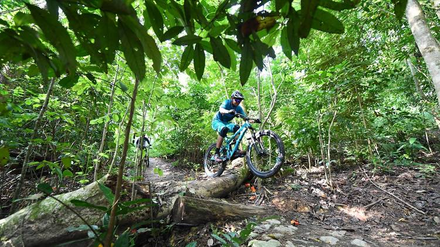

Singapore's forest have mostly been disturbed since colonialisation and post-war restoration. This makes most of Singapore's forest secondary forests. There exists only one small patch of primary (undisturbed) forest that is found in Bukit Timah Nature Reserve.
This protected forest is now home to many endangered species of fauna and flora such as the Sunda Colugo (Galeopterus variegatus), the endemic Singapore freshwater crab (Johora singaporensis), and a rediscovered ground orchid (Hetaeria oblongifolia). Read on learn more about the reserve and what we can do there.
Hiking to Hindhede Quarry
Located next to the reserve, Hindhede Nature Park is the perfect location for families to have a casual stroll and enjoy the scenic view offered. The trails in Hindhede Nature Park are well-defined and easy to traverse, making it suitable for the young and the old. For nature lovers like me, the Quarry is the perfect spot to look out for the Grey-headed Sea Eagle (Haliaeetus ichthyaetus) and Plaintain Squirrel (Callosciurus notatus).
Biking and trekking
If I have a free weekend, the Bukit Timah Nature Reserve hiking trail provides me with a place to walk and destress. Though I'm not inclined as a biker, those who are keen can check out the biking trails in Bukit Timah Nature Reserve. For anyone hoping to go, just take note to leave the place better - clear the rubbish and DO NOT add on to it!
Click here
to access the biking trail map.
Click here
to access the trekking trail.
{kind=link}